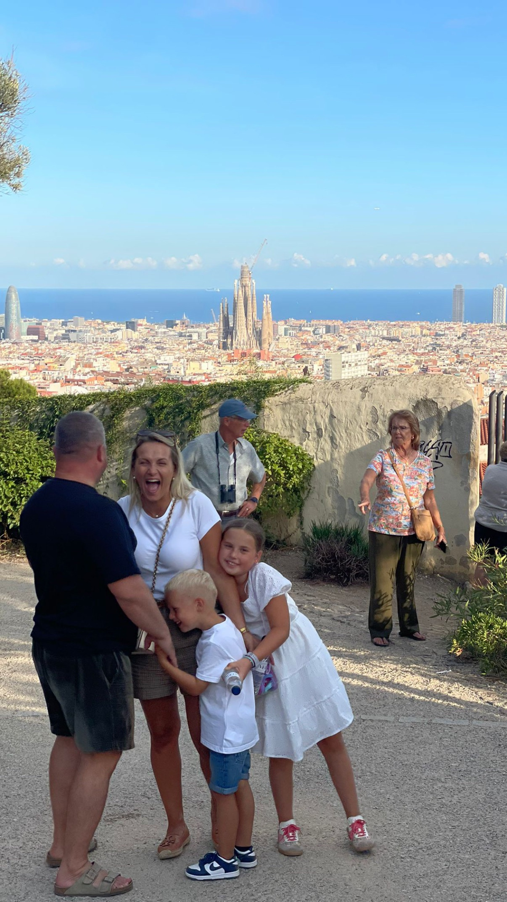
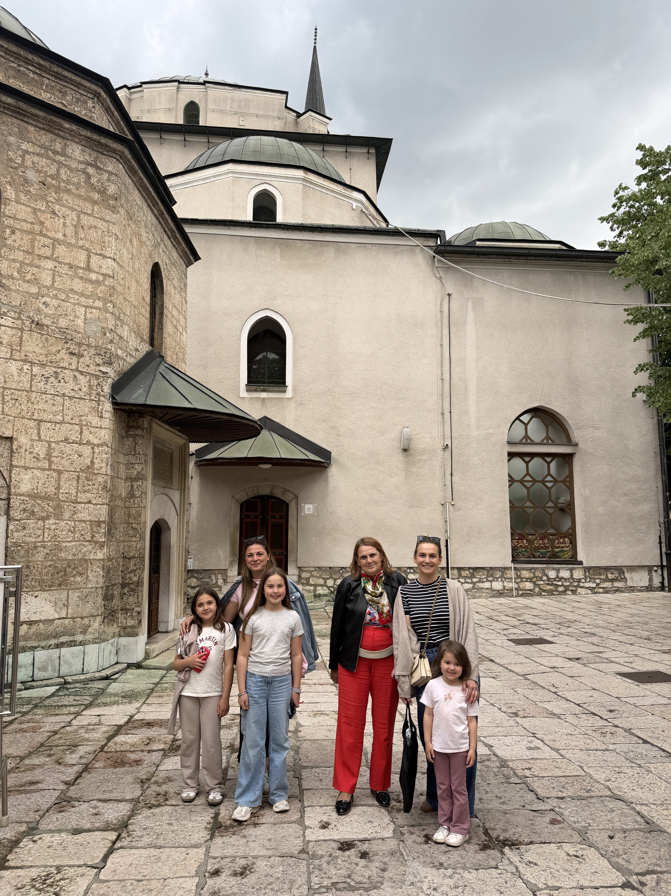
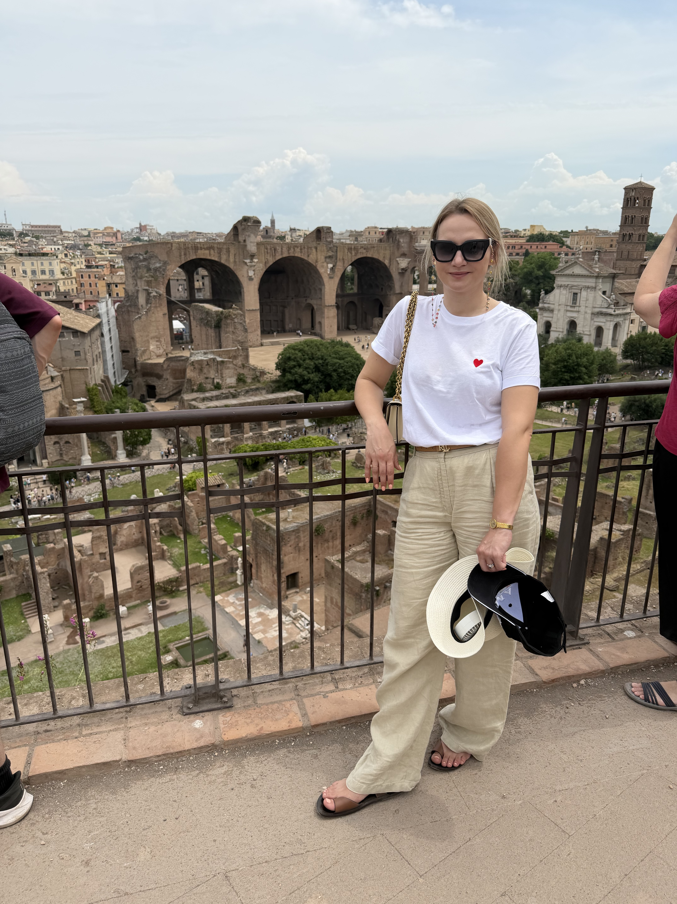

Mitt intresse – resor
Ett av mina största intressen är att resa. Jag tycker om att upptäcka nya platser, lära känna olika kulturer och prova mat från olika länder. Resor ger mig nya upplevelser och fina minnen tillsammans med min familj. Den laddar mina baterier och jag altid känner mig piggare och gladare när jag är tillbaka från en resa.
Mina reseminnen



Mina favoritresmål
| Resmål | Land | Vad jag tycker om | Bästa årstid |
|---|---|---|---|
| Sarajevo | Bosnien och Hercegovina | Kultur, natur och mat | Varje årstid |
| Kotor | Montenegro | Hav, natur och gamla stan | Sommar |
| Barcelona | Spanien | Kultur, mat och arkitektur | Vår/Höst |
| Rom | Italien | Historia och arkitektur | Vår |
| Berlin | Tyskland | Historia, mat och shopping | Vår/Sommar/Höst |
Jag hittar ofta inspiration på olika resebloggar. Den här är en av dem som jag besöker oftast. Swedish Nomads webbplats